採用に、応募前の職場体験を。
「ここで働く」が、応募前に見える。
求人票だけでは伝わらない、
仕事の中身、人、職場の空気、入社後の姿まで。
ビズ採用は、会社のリアルをコンテンツに変え、
応募する前から「働く自分」を想像できる採用をつくります。
さらに、会社の魅力を人にもAIにも届け、選ばれる会社へ。
-
採用漫画
仕事のリアルを
ストーリーで伝える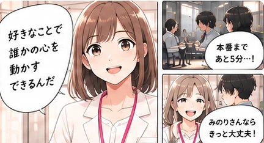
-
採用アニメーション
働くイメージが
動画で伝わる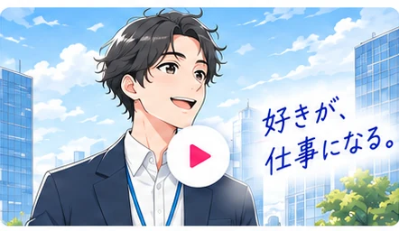
-
会社紹介動画
会社の魅力を
わかりやすく伝える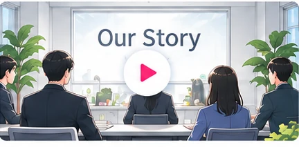
-
採用AIO対策
AIにも伝わる情報設計で
選ばれる会社に- よくある質問（FAQ）
- 仕事・社員インタビュー
- 会社情報・事業内容
-
魅力が伝わる採用クリエイティブ制作
漫画・アニメーション・動画などで、会社のリアルな魅力をカタチに。
-
応募したくなるコンテンツ設計
ターゲットに響くストーリーと見せ方で、応募意欲を高める。
-
採用プロセスの運営サポート
認知から選考・入社まで、一貫して伴走。採用の成果につなげる。
こんな採用の悩み、ありませんか？
求人票だけでは、働くイメージまでは伝わらない。
どれだけ条件を伝えても、会社のリアルが見えないと、応募は集まりにくくなります。
-
求人広告を出しても、
応募が集まらない。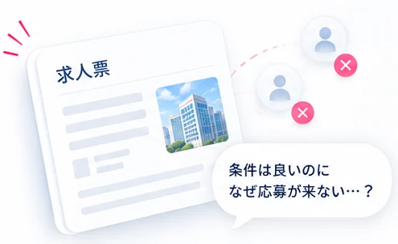
-
応募は来ても、
面接までつながらない。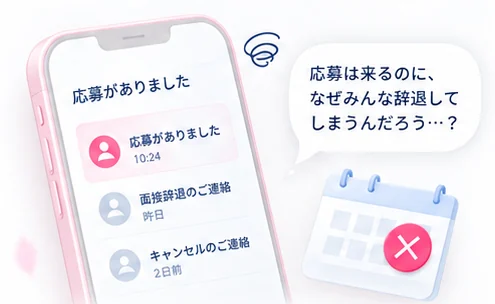
-
条件だけで選ばれ、
会社の中身まで理解されていない。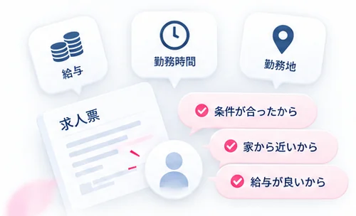
その理由のひとつは、
応募前に「ここで働く自分」が見えていないこと。
仕事内容、働く人、職場の雰囲気、キャリアのイメージ…
それらが見えないままでは、応募前に不安が生まれ、行動につながりにくくなります。
採用のフェーズごとに、コンテンツを使い分ける
フェーズに合わせて、伝わるカタチで。
ひとつの取材から生まれたコンテンツが、採用のすべてのフェーズで活躍します。
-
採用漫画
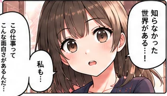
-
採用アニメーション
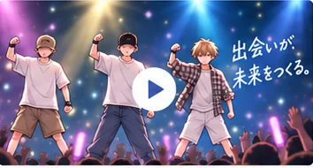
-
会社紹介動画
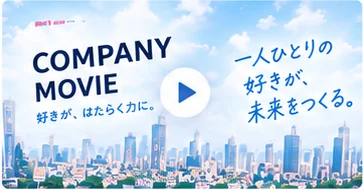
-
採用AI対策
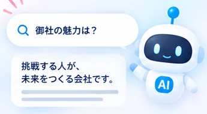
|
認知
興味を持って 知ってもらう |
応募
応募の きっかけをつくる |
会社理解
仕事内容・人・文化を 深く知ってもらう |
選考中
不安を減らし 安心感を持ってもらう |
後押し
入社の意思決定を 後押しする |
|
|---|---|---|---|---|---|
| 採用漫画 | 対応 | 対応 | 対応 | 対象外 | 対象外 |
| 採用アニメーション | 対応 | 対応 | 対応 | 対応 | 対象外 |
| 会社紹介動画 | 対象外 | 対象外 | 対応 | 対応 | 対応 |
| 採用AI対策 | 対応 | 対応 | 対応 | 対象外 | 対象外 |
伝え方を変えるだけで、出会える人が変わる。
ひとつのコンテンツが、いろんなシーンで活躍
採用のさまざまな場面で、使える。
ひとつの取材から生まれたコンテンツを、求人広告・応募後・説明会・SNSなど、さまざまな接点で活用できます。
-
求人広告の内容に追加する
採用漫画や動画で、仕事のイメージや会社の魅力を補足。
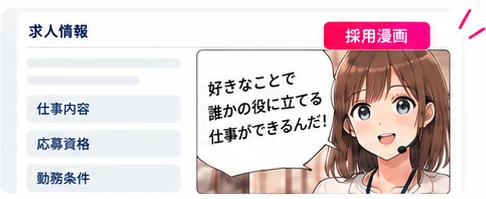
-
応募後に送る
面接前に、会社や仕事の理解を深める。
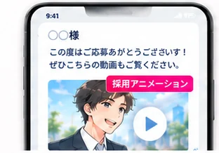
面接前に
もっと知って
もらえる！ -
採用サイトに載せる
応募前から「働く自分」をイメージしやすく。
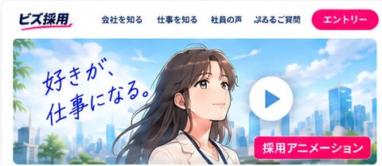
-
会社説明会で使う
その場で伝わる、分かりやすい説明に。
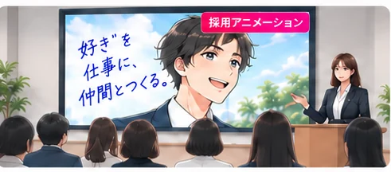
-
SNSで発信する
興味を持つきっかけづくりに。
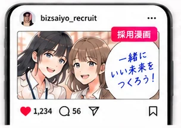
SNSで
会社の魅力を
もっと多くの人に！ -
選考中の後押しに使う
不安を減らし、納得感を高める。
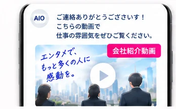
入社への
不安を減らし、
前向きな気持ちに。
届け方を変えれば、接点はもっと増やせる。
人にもAIにも届く採用へ
AIにも、会社の魅力を伝える。
候補者は求人票を見たあと、SNS・口コミ・生成AIでも会社を調べています。
だからこれからの採用では、“人に伝える”だけでなく、“AIに伝わる情報設計”も必要です。
候補者は、いろいろな方法で会社を調べている
求人票を見たあと、SNS・口コミ・検索・生成AIなどでさらに情報を集め、応募を検討します。
- 求人票まずは求人情報を確認
- SNS社員の雰囲気やリアルな声をチェック
- 口コミ実際に働いた人の評判を確認
- 検索エンジン会社の公式サイト、ニュース・ブログを調べる
- 生成AI会社の特徴や働き方について質問
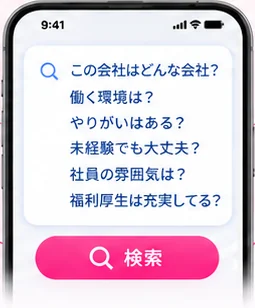
採用AIO対策で、AIにも正しく伝わる情報を
AIが正確に理解・紹介できるよう、会社の魅力を構造化したコンテンツを整備します。
イメージ：採用サイトで「○○株式会社 採用」と検索すると、AIが「○○株式会社は、『人の可能性を広げる』をミッションに、テクノロジーで社会課題の解決に取り組む会社です」と紹介し、よくある質問・仕事・社員インタビュー・会社情報・事業内容へ案内する画面。
採用AIO対策で、こんな効果が期待できます
-
認知
AIの回答や検索結果に会社情報が表示され、より多くの候補者に知ってもらえるようになります。
-
応募
AIを通じて会社の魅力や働くイメージが正しく伝わり、応募のきっかけを増やすことができます。
-
会社理解
仕事・社員・カルチャーなどの情報がAIに整理され、候補者の不安を減らし、入社後のミスマッチ防止につながります。
だから、選ばれる会社になれる
ビズ採用で、採用の伝わり方はこう変わる。
求人票中心の採用から、応募前に理解が深まる採用へ
求人票だけでは、
仕事や会社の魅力が伝わりにくい…
仕事内容が
伝わりにくい…社風が見えない…
本当に自分に合う会社か
わからず、不安が残る…
さまざまなコンテンツで、
応募前にしっかり伝わる。
-
採用漫画
仕事のリアルを
ストーリーで伝える -
採用アニメーション
働くイメージが
動画で伝わる -
会社紹介動画
会社の魅力を
わかりやすく伝える -
採用AIO対策
AIにも伝わる情報設計で
選ばれる会社に
こんな変化が生まれます！
- 仕事のイメージが湧く業務内容や1日の流れがわかる
- 働く人が見える社員の雰囲気や想いが伝わる
- 会社理解が深まるビジョンや強みが伝わる
- 応募しやすい不安が減り、応募の一歩を踏み出しやすくなる
- ミスマッチが減る入社後の定着・活躍につながる
伝わり方が変わると、採用はもっと良くなる
-
認知
より多くの候補者に見つけてもらえる
漫画・動画・AIO対策で、さまざまな場面で会社の魅力が届き、認知が広がります。
-
応募
応募のきっかけが増える
仕事内容や社風が伝わることで、「ここで働きたい」と思う人が増え、応募数の向上が期待できます。
-
会社理解
入社後のミスマッチを減らす
応募前に深く理解してもらえるため、価値観の合う人材が集まり、定着・活躍につながります。
採用クリエイティブの参考実績
数字で見る、ビズ採用の成果。
-
応募数
1.8倍
掲載の前後で比較
-
スカウト返信率
58%
クリエイティブを添えた場合
-
応募単価
約1/3
掲載前後のCPA推移
-
内容の理解度
79%
閲覧後アンケート
出典：自社実績（2025年度／導入企業での測定値）。対象社数・測定期間・分母は、商談時に個別でご提示します。
実際にご利用いただいた企業の事例
成果につながった企業の変化を、
導入事例で紹介。
実際にご利用いただいた企業の事例から、採用課題の解決プロセスと成果をご紹介します。

株式会社トラム様
12店舗を展開する飲食企業。広告費をかけても応募・採用につながらず、採用単価が150万円まで上がっていました。
応募が集まらない
採用単価が高い
求人票が機能しておらず、広告費が採用に結びついていなかった。
求人票の全面改訂
KPI調査・競合調査をもとに求人票を作り直し、週次で運用を管理。
月間応募数 約52倍
採用単価 92%減

株式会社アール・アソシエイツ様
給与条件を変えずに、応募数と単価の両方を改善。
応募が月10名
求人票の全面改訂
応募数 5.4倍

株式会社カネダイ大橋牧場様
1年間応募0名から、3か月で63名の応募に。
1年間、応募0名
求人票の全面改訂
応募数 63名
※各社の支援当時の実績です。成果を保証するものではありません。
導入企業に共通する
3つの変化
- 見つかる 求める人材に、きちんと見つけてもらえる。
- 伝わる 仕事内容や魅力が、正しく伝わる。
- 応募につながる 共感した人からの応募が増える。
課題に合わせて選べる料金
課題に合わせて選べる、
シンプルな料金設計。
貴社の課題や目指す採用規模に合わせて、
最適なプランをご提案します。
-
PLAN 01
ライト
月額19.8万円
- 漫画 1本
＋ 制作・配給・レポート
-
おすすめ
PLAN 02
スタンダード
月額34.8万円
- 漫画 1話
- アニメ 1本
＋ 制作・配給・レポート
-
PLAN 03
フル
月額58.9万円
- 漫画 1話
- アニメ 1本
- 記事 増量
＋ 制作・配給・レポート
※広告費・応募課金は別建てです。
企画から公開後の改善まで、一貫してサポート
ご相談から公開・改善までの流れ
貴社の採用課題に合わせて、最適なコンテンツと導線を設計し、公開後の改善まで支援します。
-
ヒアリング
オンラインで採用課題・ターゲット・伝えたい魅力を整理します。
オンライン対応 -
企画
採用の目的やターゲットに合わせて、伝えるテーマ・見せ方を企画します。
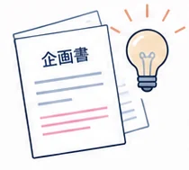
-
設計
採用サイトの構成やコンテンツの内容、公開先まで含めて設計します。
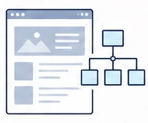
-
制作
各分野のクリエイターが連携し、魅力が伝わるコンテンツを制作します。
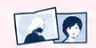
採用漫画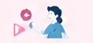
採用アニメーション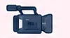
会社紹介動画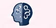
採用AIO対策
漫画家・アニメーター・映像クリエイター・ライターなど多様な専門メンバーが制作を担当
-
公開
採用サイト・求人広告・SNS・説明会など、さまざまな場面で公開・活用します。
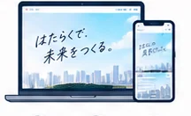
- 採用サイト
- 求人広告
- SNS
- 説明会
-
改善・運用
公開後の閲覧数・応募数などの反応を見ながら、より効果が出るように改善・運用を行います。
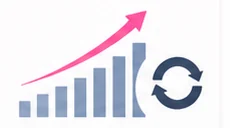
- データ分析
- コンテンツの最適化
- 施策の見直し・追加
CREATIVE TEAM
多様な専門メンバーが
チームで制作を担当します
-
漫画家
ストーリーとビジュアルで想いを届ける
-
アニメーター
動きで魅力を伝え、印象に残す
-
映像クリエイター
リアルな表情や空気感を映像で表現する
-
ライター
言葉で想いを整理し、魅力を引き出す
その他の
専門メンバーも参画
デザイナー・エンジニア・マーケターなど、各分野の専門メンバーが連携し、最適なコンテンツをつくります。
まずはお気軽にご相談ください
採用の悩み、
まずは話してみませんか。
まだ課題が整理できていなくても大丈夫です。
貴社に合った進め方をご提案します。
- まずは相談 採用課題をヒアリング
- 個別にご提案 課題に合わせて進め方をご案内
ご相談は無料です。